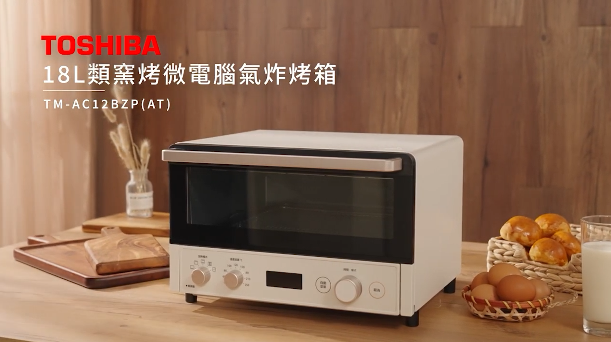
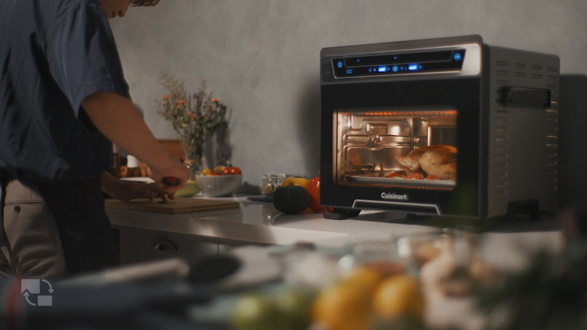
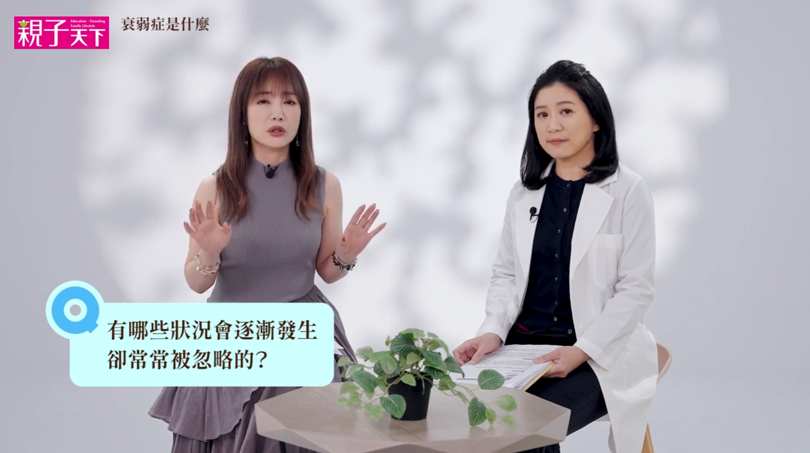
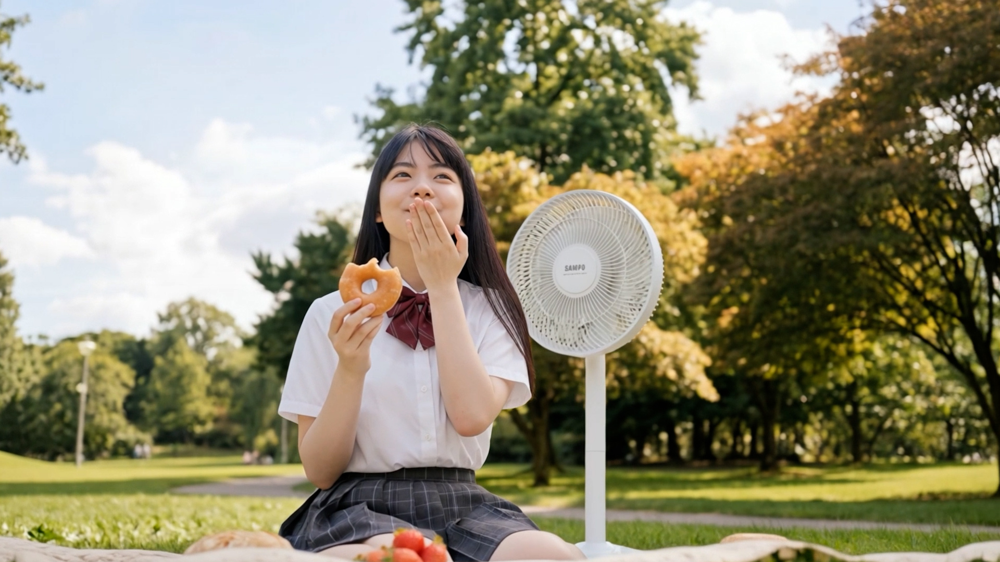
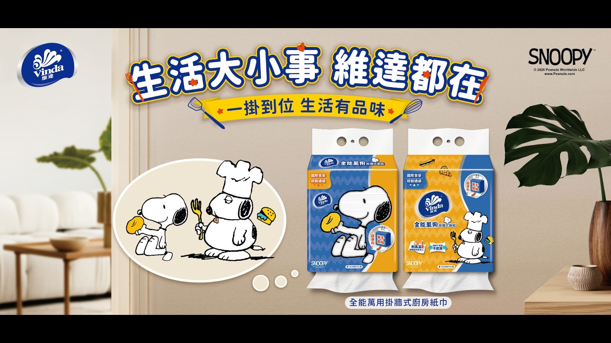
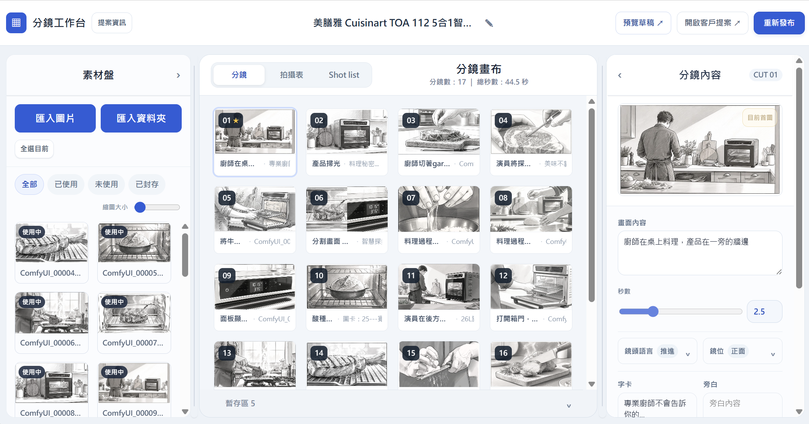
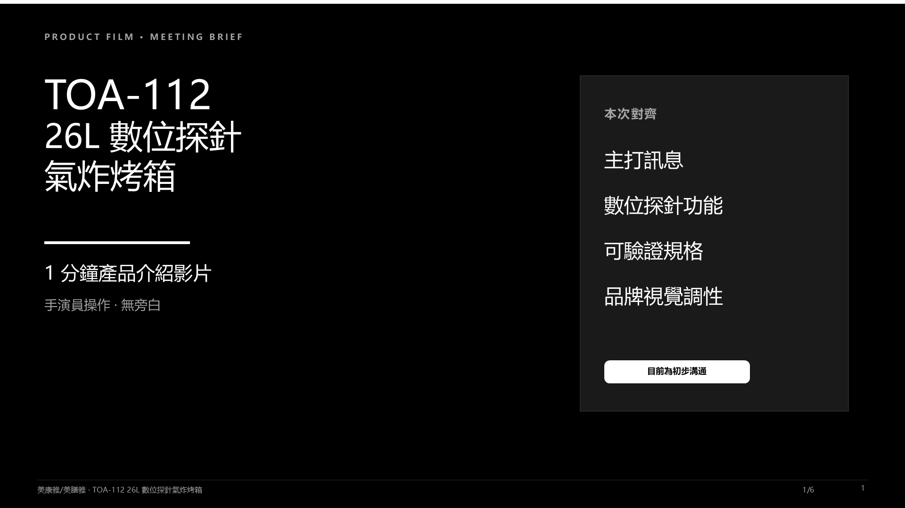

觀看 YouTube 選集 ↗商業實拍廣告
產品影像 · 實拍製作

實拍製作
我做影像，從前製到成片。
看精選作品
觀看 YouTube 選集 ↗產品影像 · 實拍製作

觀看 YouTube 選集 ↗
進入圖像 Gallery →生成式影像 · 圖像研究

進入影片 Gallery →生成式影像 · 短版廣告
TOA-112 26L 數位探針氣炸烤箱
從前期規劃、場景與料理設計，到實際拍攝與後期完成的產品影片。
Pending Case
Vibe Coding 開發的分鏡製作工具。

將結構化專案需求轉成可編輯的 Meeting Brief，供第一次客戶會議對焦。
